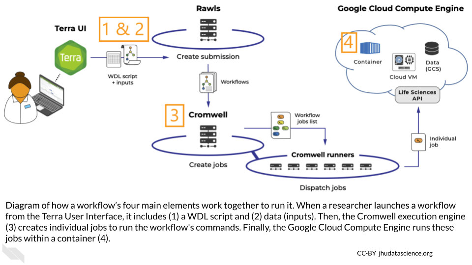
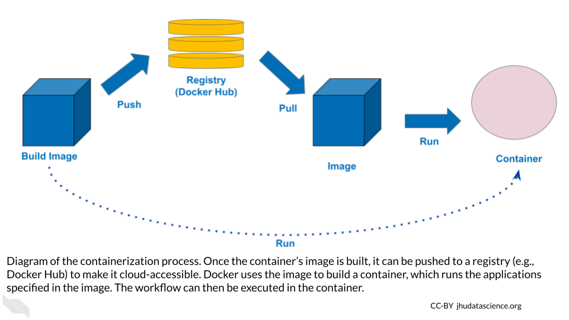
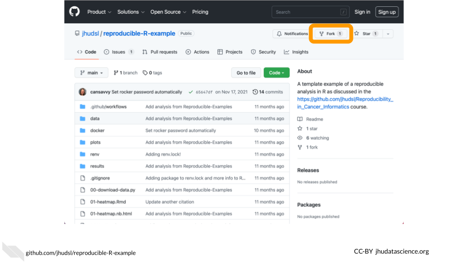
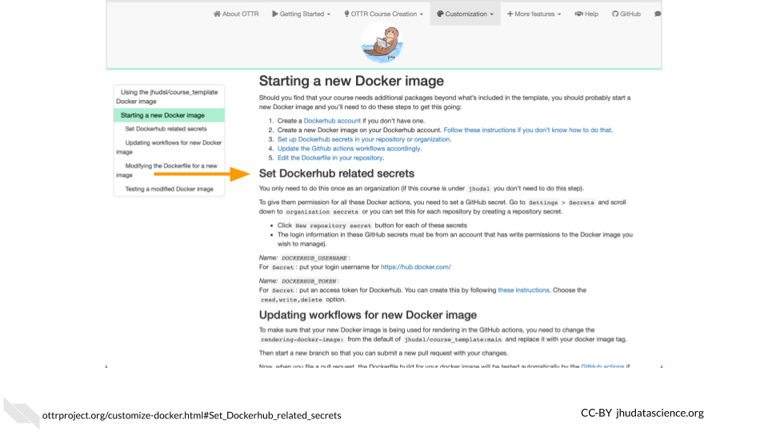
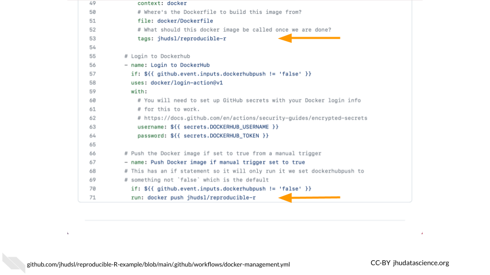
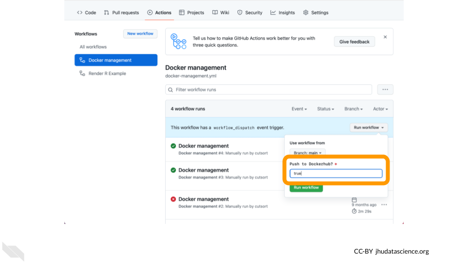
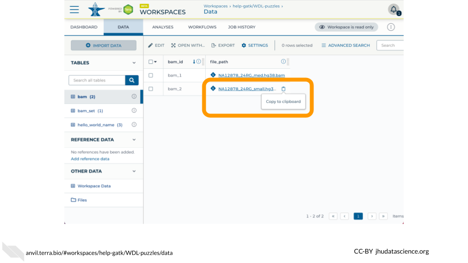

Chapter 5 Customize Docker
Having run a workflow, written a WDL, and localized a file, let’s now build a custom Docker image. This tutorial demonstrates how to build a Docker image that contains SAMtools so that we can calculate idxstats on a small .bam file. We will use the GitHub Action build-and-push-docker-images so that you do not need to have Docker installed locally. This material was modified from the WDL Bootcamp Workshop. More information about making Docker images can be found in this Terra Support article.
Learning Objectives
- Identify what containerization is, and why it’s helpful for running workflows
- Identify the key components of a Docker container
- Understand how to find and use a pre-existing Docker image
- Configure GitHub Actions
- Build and run a Docker image
- Create idxstats WDL
- Run idxstats workflow
- Understand how to specify a container for an AnVIL-powered-by-Terra workflow
5.1 Prerequisites
GitHub: Create an account to build Docker images using GitHub Actions
Docker Hub: Create an account to publish Docker images that AnVIL can access
5.2 Containerization with Docker
Behind the scenes, a workflow requires four main elements:
- Data
- A workflow script (written in WDL)
- An execution engine to manage the workflow’s jobs
- A container in which to run the workflow

These elements all work together to run the workflow – the container’s role is to control all of the code packages and dependencies used to run the workflow’s WDL script. This is called “containerization.”
5.2.1 Why is containerization helpful?
Containerization makes it easier to reproduce workflow analyses. For example, if two collaborators are analyzing the same data using different versions of Python, they might get different results. Containerization controls the environments in which you’re running these analyses, saving you from puzzling over incompatible results. Containerization can also ensure that other researchers can replicate your results and apply your tools to their own data. Containerization is even helpful when re-running old code – if your code packages have automatically updated since you last ran the code, using a container may prevent your code from breaking.
5.2.2 Docker containers
You can manage your containers with several services. We’ll focus on Docker.
Docker containers have two main components:
- A Docker file that defines the container’s dependencies, environment variables, file system, and applications.
- A Docker image that builds and runs a container, which contains everything defined in the Docker file.
In addition, a registry (e.g., DockerHub) is used to share Docker images with others, and to make your Docker image accessible from the Cloud (e.g., in AnVIL-powered-by-Terra).

5.2.3 Using Docker containers in your workflow
A workflow’s container constrains the code that you can write in the WDL script; for example, a WDL script with Python commands must be run in a container that includes Python. So, how can you ensure that you’re using the right container on AnVIL-powered-by-Terra?
To direct AnVIL-powered-by-Terra toward the correct container, specify the container’s image in the WDL script. We already did this in the exercise from Chapter 3, by including a “docker” variable in the “runtime” section of the task definition:
runtime {
docker: 'ubuntu:latest'
}In this example, we simply specified the most up-to-date Ubuntu image. However, in many cases the best choice is to use a specific image, which won’t change after you’ve written the workflow.
Note that you can use different images in different tasks within your workflow.
5.3 Using a Published Docker Image Out of the Box
To set up your workflow’s container, you can build a Docker image from scratch, modify an existing image, or find a published image that you can use out of the box, without any modifications.
This last option is a particularly good option when you only need your container to include a single tool. You can find useful images in the following ways:
5.3.1 Google
A good first step is to search for “Docker image” and the name of the software that you want to include in the container on a search engine like Google or Bing.
5.3.2 Docker Hub and Quay.io
Docker Hub is an online platform for sharing Docker images. Use the “Explore” menu to filter for suitable images. It’s a good idea to filter for images from trusted sources, including Docker official images and images from verified publishers.
Quay.io is another Docker-sharing platform, with similar functionality.
5.3.3 DockerBIO
DockerBIO is a Java web application that focuses on Docker images for bioinformatics analyses. This approach requires a bit more setup, but can make it easier to find an image that’s relevant to your work.
5.3.4 Next steps
Once you’ve found a published image that suits your needs, clone it to create your own copy. This will ensure that your analysis is reproducible, because the image won’t change unless you edit it.
Sections 5.4 and 5.5 show you how to take a step further, and modify a published image for your workflow. To see how to use a Docker image without any modification, skip these sections and start again at section 5.6.
5.4 Configure GitHub Actions
In the next section, we’ll get more in the weeds to show you how to modify a published Docker image to customize it for your workflow.
The GitHub Action build-and-push-docker-images provides a Cloud-based solution to building a Docker image and pushing it to Docker Hub. We will start with a repository created for the ITN course Intro to Reproducibility in Cancer Informatics that has this GitHub Action configured.
First, fork the reproducible-R-example repository.

Your new repository must be configured with the proper credentials (referred to as Actions secrets by GitHub) to push an image to Docker Hub. Follow the OTTR Project instructions) to set DOCKERHUB_USERNAME and DOCKERHUB_TOKEN.

Update the .github/workflows/docker-management.yml file with your Docker Hub username and repository. For example, change jhudsl/reproducible-r to my_username/my_repository. Note that you need to change this on both line 53 and line 71.

This docker-management.yml file points Docker toward the correct Docker image file and links your GitHub repository with your Docker account.
5.5 Build Docker image
The docker/Dockerfile file is the Docker image file, which is written in YAML syntax. It typically initializes the container with a base image that provides some basic dependencies, then installs additional software and dependencies as necessary. It may also provide metadata, set up scripts, and define commands to run when the container starts.
For a base image, we’ll start with condaforge/mambaforge which is maintained by condaforge and provides conda on top of ubuntu-20.04. Replace the contents of the docker/Dockerfile file with the following to install SAMtools via bioconda.
FROM condaforge/mambaforge
RUN conda config \
--add channels defaults \
--add channels bioconda \
--add channels conda-forge
RUN conda install -y samtoolsRun the GitHub Action by navigating to the Actions tab, selecting Docker management, and clicking on Run workflow. Note that you must change Push to Dockerhub? to true.

You must change Push to Dockerhub? to true for your Docker image to be pushed to Docker Hub.
5.6 Use your image with the idxstats WDL
The next step is to modify the WDL script that you wrote in Chapter 4 to run in a container built by this Docker image. Edit your idxstats WDL script to call samtools idxstats on a bam file to specify your customized Docker image.
The result should look something like the version below, except that your version should point to the name of your own Docker image’s repository, rather than cutsort/test:
version 1.0
workflow samtoolsIdxstats {
input {
File bamfile
}
call idxstats {
input:
bamfile = bamfile
}
output {
File results = idxstats.idxstats
}
}
task idxstats {
input {
File bamfile
}
command <<<
samtools index ~{bamfile}
samtools idxstats ~{bamfile} > idxstats.txt
>>>
output {
File idxstats = "idxstats.txt"
}
runtime {
docker: 'cutsort/test'
}
}The next step is to add this WDL script to the Broad Methods Repository in order to run the workflow in Terra.
Follow the steps outlined in Chapter 3 to access the Broad Methods Repository and create a new method.
Then, copy or upload your WDL script into the new method and export it to your cloned version of the WDL-puzzles workspace.
5.7 Run idxstats workflow
Once you’ve exported the workflow to your AnVIL-powered-by-Terra workspace, open the workflow.
Select “Run workflow(s) with inputs defined by data table”, select the “bam” table, and select one row of the data table for a test run.

Fill in the column that stores the path to the input bam file (this.file_path).
In the Outputs tab, give the output column a name by typing this.COLUMN_NAME (for example, this.idxstats_output).
Then click “run” to run the workflow, and monitor its progress. Once the workflow has finished running, you should see a new column in the “bam” table with a link to a .txt file with the QC metrics output by the workflow.
5.8 Best practices for using Docker
The WDL Analysis Research Pipelines (WARP) GitHub page lists some recommendations for setting up Docker containers. Here are a few highlights:
- Make sure that your image isn’t too large, to avoid using unnecessary compute resources. Start with small images (e.g., Alpine) and include as few run steps as possible in the image file.
- Make dockers publicly accessible.
5.9 Further Reading
If you’re interested in a deeper dive into this chapter’s topics, check out these optional articles:
- To learn more about how to use Docker to create and store images, read Docker/container overview.
- For information on using Docker to develop images locally, read how to install docker and test that it works.
- How to run GATK in a Docker container
- Docker Image Publishers’ Tips